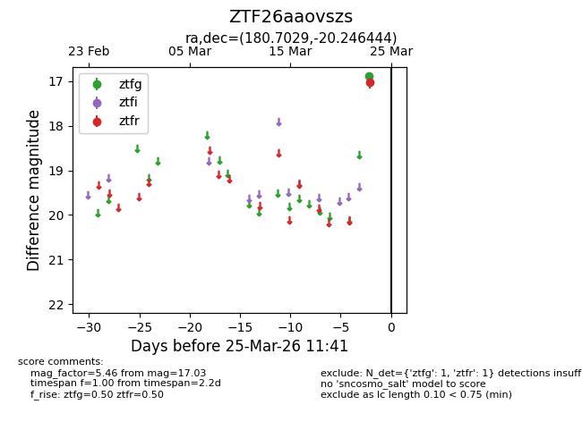
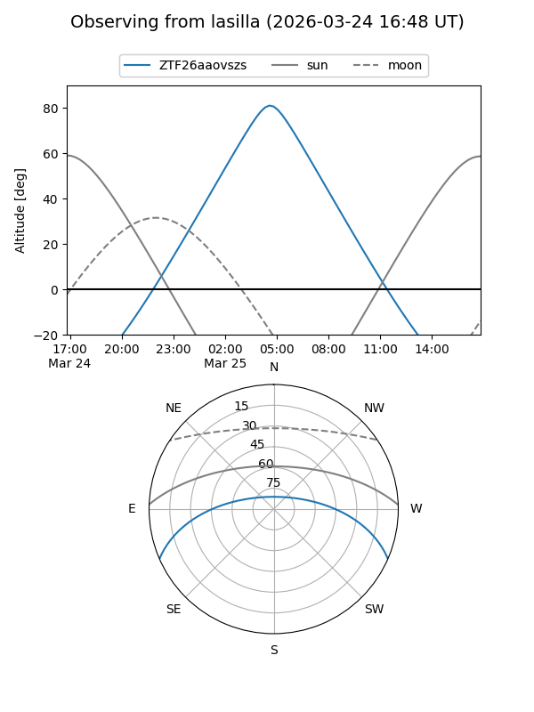
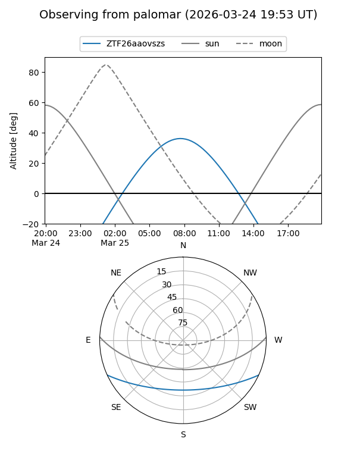

ZTF26aaovszs
Target ZTF26aaovszs at 2026-03-25 11:45
Aliases and brokers:
FINK: link
Lasair: link
ALeRCE: link
alt names
ZTF26aaovszs (ztf,fink_ztf)
Coordinates:
equatorial (ra, dec) = 180.7029,-20.24644
equatorial (HMS+DMS) = 12:02:48.69,-20:14:47.20
galactic (l, b) = (287.7122,+41.18380)
Flags:
Photometry:
last ztfg=16.88, ztfr=17.03
1 ztfg, 1 ztfr detections
Lightcurve

Visibility


Additional plots